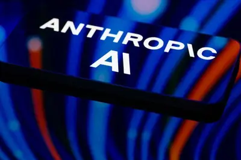
其他AI 每日新聞彙整
全部主題
其他
2 家媒體報導ipoanthropicfunding
Anthropic 史上最大 IPO 難救市！美股 AI 蒸發 4 兆美元背後投資人恐慌
自 2022 年 ChatGPT 問世，並開啟新一輪改變全球技術與資本市場的新週期以來，投資者首次展現出強烈的 […]
- DIGITIMES AI泡沫疑慮下的世紀IPO Anthropic商業變現迎市場檢驗
- 科技新報 TechNews Anthropic 史上最大 IPO 難救市！美股 AI 蒸發 4 兆美元背後投資人恐慌
microsoftgithubcopilot
微軟揭露GitHub Copilot CLI釣魚攻擊風險，駭客恐藉合法登入程序操控AI代理
駭客不必竊取帳號密碼，也可能利用合法的裝置驗證碼登入機制，誘騙開發者核准登入要求，藉此取得OAuth存取權杖。微軟研究發現，這類釣魚攻擊不只可能造成開發資料外洩，在特定條件下，還可能讓攻擊者遠端操控AI代理，在使用者電腦上執行命令。
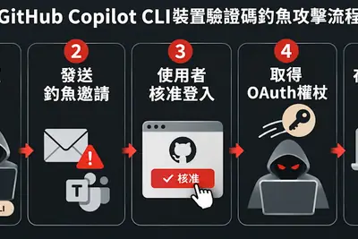
amddatacenterdigitimes
DIGITIMES Today：中國AI算力競賽「燒錢」加速 | NVIDIA中國團隊「仁勳惶惶」？| 超微資料中心2027佔比衝8成
早安。
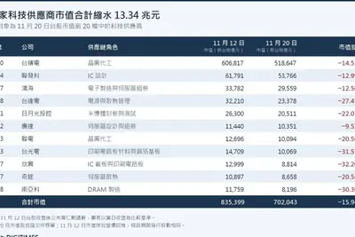
computetdp
AI散熱戰場深入晶片封裝 鑽石散熱與微通道競合可期
當AI浪潮將算力推向全新境界，晶片熱設計功耗（TDP）也隨之大幅攀升。在傳統金屬導熱材料與既有散熱架構逐漸面臨瓶頸之際，具備「導熱之王」美譽的鑽石，成為新一代散熱技術的焦點。然而，鑽石散熱在AI產業的商業化進程中，仍牽動著成本結構、製程良率與台灣散熱供應鏈的...
- DIGITIMES AI散熱戰場深入晶片封裝 鑽石散熱與微通道競合可期
5.3
無畏股市連日重挫打擊 金管會宣示打造資本島願景
台股總市值曾達5.3兆美元，名列全球第4，僅次於美國、中國及日本。不過在NVIDIA執行長黃仁勳請辭、市場擔憂AI泡沫化，及美國政府可能擴大禁止對中國的AI晶片銷售後，台股總市值已退居全球第7。金管會近日祭出禁空令，國安基金也宣布進場，但賣壓仍沉重。由於台...
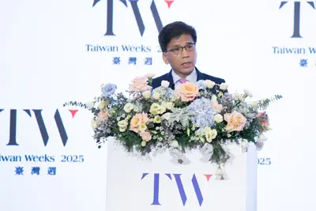
- DIGITIMES 無畏股市連日重挫打擊 金管會宣示打造資本島願景
黃仁勳離任NVIDIA中國團隊「仁勳惶惶」？ 定位與市場戰略恐遭削弱
NVIDIA中國團隊正面臨成立以來最方向不明的時刻。隨著創辦人兼前執行長黃仁勳離任，加上美國政府持續收緊先進晶片出口管制，過去由黃仁勳一直積極維繫的中國市場布局，面臨新一輪壓力。

- DIGITIMES 黃仁勳離任NVIDIA中國團隊「仁勳惶惶」？ 定位與市場戰略恐遭削弱
ceonvidiafunding
NVIDIA代理CEO走鋼索 能保住AI引擎、放下融資循環包袱？
NVIDIA代理執行長Colette Kress在最新一季財報釋出「需求加速」和「審慎提供融資擔保」的訊號，而NVIDIA仍面臨尋找合適執行長接班人選，以及黃仁勳留下人工智慧（AI）循環經濟運行模式的挑戰。
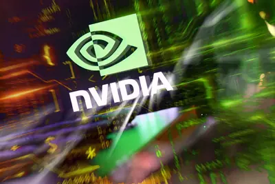
- DIGITIMES NVIDIA代理CEO走鋼索 能保住AI引擎、放下融資循環包袱？
vdc800100
AI機櫃功耗破100kW 台達電攜羅姆布局日本800VDC
日本羅姆半導體（Rohm）18日宣布，將與台達電日本法人，就人工智慧（AI）資料中心的供電展開合作。雙方已就於日本市場實現面向AI資料中心的高壓直流供電解決方案，即800伏特直流電（800VDC）解決方案，簽署基本協議。兩家公司將結合電源系統與半導體技術，...
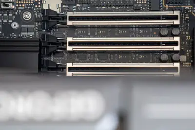
- DIGITIMES AI機櫃功耗破100kW 台達電攜羅姆布局日本800VDC
anthropiccomputekrishna
Anthropic上市衝市值第七 財務長談未來三句不離「算力效率」
美國人工智慧（AI）公司Anthropic於當地時間11月19日正式掛牌納斯達克交易所，首日收盤市值來到1.8兆美元，成為世界上第七大值錢的公司。IPO關鍵推手、財務長Krishna Rao在受訪時，提到最多次的關鍵字，無疑就是「算力效率」（compute eff...
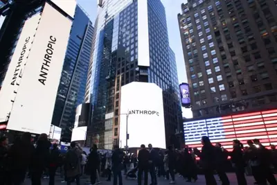
- DIGITIMES Anthropic上市衝市值第七 財務長談未來三句不離「算力效率」
tencentcspcompute
評析：中國AI算力競賽「燒錢」加速 三大CSP現金流面臨考驗
「浪已經殺過來了。」騰訊董事長馬化騰近日在內部會議上的這番警告，道出了中國大型科技業者面對AI浪潮的急迫感。
- DIGITIMES 評析：中國AI算力競賽「燒錢」加速 三大CSP現金流面臨考驗
datacentercomputeneoclouds
中國客戶成放貸詛咒 雲端新勢力風光恐不再
美國祭出最新人工智慧（AI）晶片出口限制措施，目的是防止中國業者藉由東南亞等地的資料中心存取高階算力。而這也讓原本風光的「雲端新勢力」（neoclouds）業者，貸款已不如以往順利。

- DIGITIMES 中國客戶成放貸詛咒 雲端新勢力風光恐不再
amdfundingworld
評析：AI晶片競爭轉向賣系統能力 NVIDIA全生態對決超微系統級
黃仁勳風波與新聞撲天蓋地之際，超微（AMD）於美國當地時間11月16日宣布完成收購World Labs，這筆以約82億美元全股票支付，從9月28日簽署協定到完成交割僅用46天，成為超微歷來僅次於賽靈思的第二大購併案。
- DIGITIMES 評析：AI晶片競爭轉向賣系統能力 NVIDIA全生態對決超微系統級
openaiagentagents
養出 AI 駭客？OpenAI 被加州政府告上法院
當 AI 從「被動回答問題」進化為能夠自動規劃並執行任務的「AI 代理程式」（AI Agents）時，若演算法 […]
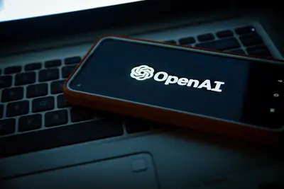
- 科技新報 TechNews 養出 AI 駭客？OpenAI 被加州政府告上法院
funding
AI 產出「做半套」，隱形補位工時正吞噬企業效能
企業在評估人工智慧（AI）投資時，通常會緊盯模型、基礎設施與工具訂閱等可直接列帳的支出，但真正難以量化的，往往 […]
- 科技新報 TechNews AI 產出「做半套」，隱形補位工時正吞噬企業效能
googlehomegemini
Google 宣布智慧音箱與螢幕的語音助理 8 月全面更新為 Gemini for Home
智慧助理改朝換代！Google 宣布 Nest app 將於 2027 年 1 月 25 日停用，裝置改由 Google Home app 管理，智慧音箱與智慧螢幕上的 Google Assistant 則在 2027 年 8 月 2 日由 Gemini for Home 取代，現有 Nest 硬體不必換新。
fsdv15
IT早报 1123：菲尔兹奖得主谈“AI 攻克黎曼猜想”仍需解决关键思路；特斯拉 FSD v15 全新实景视图引热议；张雪机车计划明年推出外卖电摩...
“IT早报”时间，大家好，现在是 2026 年 11 月 23 日星期一，今天的重要科技资讯有： 1. 菲尔兹奖得主梅纳德谈“AI 攻克黎曼猜想”：相信证明正确，但成果被人理解、才可能得到认可 Lean 与 Mathlib 社区发布联合声明，以 Lean 库形式给出的黎曼猜想证明已经通过核验，该证明的代码约 1700 万行。>> 查看详情 2. 特斯拉 FSD v15 全新实景视图引热议，消息称是在硬件劣势的情况做了 3D 高斯全场景重建 特斯拉 11 月 22 日宣布在美国市场推出 FSD v15，带来了全新可视化界面 ——“Tesla Reality
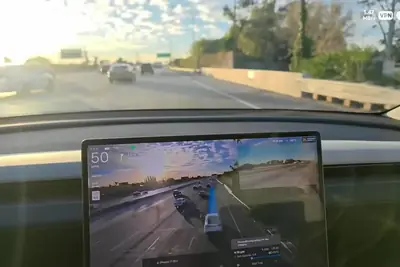
funding
AI 投資破兆卻難走入實體經濟？材料科學家揭「十年稅」成最大瓶頸
材料科學家指出，AI 雖然帶動龐大投資熱潮，但真正限制其走入實體經濟的關鍵，並不在於模型本身，而是新材料研發過 […]
- 科技新報 TechNews AI 投資破兆卻難走入實體經濟？材料科學家揭「十年稅」成最大瓶頸
samsung2031hbm
三星電子至 2029 年記憶體產能幾近售罄，客戶搶簽長約至 2031 年
隨著全球人工智慧（AI）資料中心建設持續擴大，記憶體半導體需求快速攀升，全球供應緊張的情況正逐步從高頻寬記憶體 […]
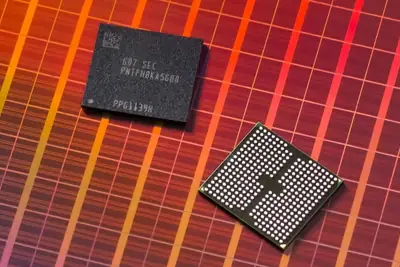
- 科技新報 TechNews 三星電子至 2029 年記憶體產能幾近售罄，客戶搶簽長約至 2031 年
美股重挫引發華府風向改變，財長貝森特改口黃仁勳已是外部人士
隨著美國科技股連日重挫、輝達（NVIDIA）股價大幅下跌，華盛頓政壇對黃仁勳去留的態度出現戲劇性轉變。除了日前 […]
- 科技新報 TechNews 美股重挫引發華府風向改變，財長貝森特改口黃仁勳已是外部人士
safetyopenai
OpenAI 首席科学家警告：AI 最早可能在 2027 年加速自身发展，奥尔特曼赞同为 AI 开发设限
IT之家 11 月 23 日消息，当地时间于 11 月 22 日，OpenAI 首席科学家雅库布 · 帕霍茨基（Jakub Pachocki）发文，提议 AI 企业应建立行业统一标准，对先进 AI 模型的开发设置共同限制，在研究人员具备更可靠的模型行为理解和监控能力之前，不应突破约定的发展门槛。 他认为，传统 AI 能力评测基准会随着技术进步迅速过时，而困惑度（Perplexity）可以作为衡量模型预训练进展的参考指标（困惑度用于衡量 AI 模型预测下一个文本 Token 的能力，数值越低，代表模型的预测能力越强）。 帕霍茨基还公布了 OpenAI 内部
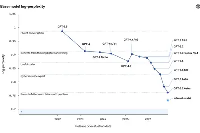
seenintellast
We haven’t seen the last of the major tech outages
Over the last week or so, we have seen a nationwide FAA ground stop, a multi-day Outlook outage that brought entire companies to a standstill, and a banking outage at JPMorgan Chase. But the consensus is that there are more to come. Director of National Intelligence Jay Clayton t
- The Verge AI We haven’t seen the last of the major tech outages
appleiphonemeta
古尔曼：苹果准备在明年 2 月至 3 月 iOS 27.4 周期中推出入门级 iPad、iPhone 18e 和全新 MacBook Neo
IT之家 11 月 23 日消息，彭博社记者马克 · 古尔曼昨晚发布了最新一期 Power On 新闻通讯，分析了苹果在 AI Agent 竞争中的处境，并披露了苹果 2027 年上半年的部分新品计划。 IT之家此前报道，苹果正在招聘负责 Agentic AI 项目的高级工程管理人员，招聘描述涉及跨应用操作、网页浏览、命令执行及代码编写和调试等能力。 古尔曼认为，苹果在 AI Agent 竞争中面临的主要问题并非缺乏资金或技术资源，而是传统软硬件开发模式已经难以适应 AI 行业快速迭代的节奏。 他指出，苹果过去依靠生态系统建立了竞争优势。用户在 iClo
samsungalibaba
【科技早餐】美國 AI 晶片新規生效！台積電、三星暫停部分對中出貨，阿里巴巴雲端成長承壓
【科技早餐】今天精選 8 則國內外重要科技新聞。 ＊美國 AI 晶片新規生效！台積電、三星暫停部分對中出貨，川普稱只賣舊款晶片 美國商務部工業暨安全局（BIS）11 月 19 日生效的 AI 晶片出口新規，進一步收緊中國企業取得先進算力的管道。據《Reuters》引述消息人士指出，台積電已暫停部分中國客戶採用 16 奈米及更先進製程的訂單，除非客戶取得美國出口許可；《Financial Times》則報導，台積電與三星（Samsung）均暫停部分對中出貨。台積電表示將遵守相關規定，但不評論市場傳聞，三星未公開證實。美國總統川普（Donald Trump）
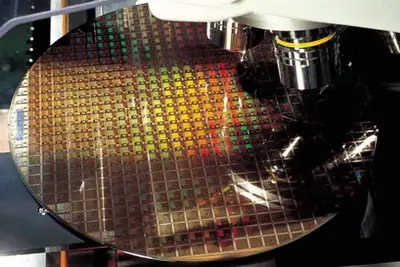
- TechOrange 科技報橘 【科技早餐】美國 AI 晶片新規生效！台積電、三星暫停部分對中出貨，阿里巴巴雲端成長承壓
limitdevelopmentchief
OpenAI’s chief scientist has thoughts on how to limit AI development
To establish a speed limit on AI development, you need to agree on how to measure speed.
datacenterscenter
Why data centers are at the center of the Big Tech backlash
Journalist Paris Marx unpacks his new book "Hyperscale."
bindingisaacrepentance
Binding of Isaac developer removes AI music from Repentance Plus
The Binding of Isaac: Repentance Plus has spent the last few days getting review-bombed on Steam after it was discovered that a particular segment of the game used AI music. Reddit user ShweetsStuff discovered the songs used during a Grand Theft Auto-themed section. They found se
urlhttpscomments
Perplexity and Intelligence
Article URL: https://openai.com/index/perplexity-and-intelligence/ Comments URL: https://news.ycombinator.com/item?id=50601525 Points: 449 # Comments: 304
- Hacker News (100+) Perplexity and Intelligence
- Hacker News (100+) Show HN: I built a game where you are an LLM's subagent
- Hacker News (100+) 87% of the Anthropic power will come from gas and 11% from coal in 2028
cpufrostbitearchitect
美国初创企业公布 AI 自研 CPU 架构 Frostbite，能效是传统处理器的 4.59 倍
IT之家 11 月 22 日消息，美国加利福尼亚州帕洛阿尔托的初创公司 Architect Labs 在一篇研究博客中宣布，其人工智能系统已经自主发现、设计并验证了一款名为 Frostbite 的通用 CPU。这款处理器采用全新的指令集，从底层开始重新设计，试图摆脱传统 CPU 的部分架构限制。 在 25 项工作负载测试中，由 4 个计算单元组成的 Frostbite 集群， 每瓦性能达到一款尺寸相近、已经完成硅验证的双发射顺序执行 CPU 核心的 4.59 倍 。不过，这些数据来自基于 7 纳米工艺的模拟设计，Frostbite 尚未真正流片，因此还没
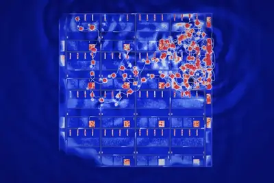
oracleabileneshackelford
Oracle：已确保履行与 OpenAI 合同全部所需资金
IT之家 11 月 22 日消息，Oracle（甲骨文）当地时间本月 20 日表示， 该企业已在本月初筹集到了履行与 OpenAI 交易的全部所需资金 ，与供应商进行的任何进一步私下讨论仅为补充选项。 ▲ Abilene Oracle 称其与 OpenAI 在 AI 基础设施合作方面的进展迅速： 位于美国得克萨斯州 Abilene 的园区已用于 GPT-6 Astra 的训练 ， 整体接近完工 ；下一个 GW 级项目 Shackelford 已获得所有许可；NVIDIA Vera Rubin 机架交付工作正按计划进行，预计将在未来几周内完成。 ▲ Sha
签约后也能涨价：消息称 AI 服务器厂商交付前提价，涨幅最高达 45%
IT之家 11 月 22 日消息，据金融时报报道，随着人工智能基础设施成本飙升并向下游客户传导，销售数据中心设备的科技公司正在与买家签署合同数月后，大幅上调搭载英伟达芯片的人工智能服务器价格。 包括戴尔、慧与科技（HPE）、联想和超微电脑（Supermicro）在内的供应商，向自建数据中心的客户销售服务器，其中包含 GPU、内存芯片和网络设备等组件。 此类交易通常在交付前很早就已达成协议 。 然而据知情人士透露，数月后，当设备准备交付时， 这些科技公司要求的价格远高于最初商定的金额 。 在人工智能设备供不应求的当下，大型金融服务与交易公司虽然是仅次于大型
minimax
MiniMax 利用最新内部模型破解多个密码学前沿方案，刷新国际挑战赛纪录
IT之家 11 月 22 日消息，MiniMax 今日宣布，近期，MiniMax 研究团队利用 MiniMax 最新内部模型对现代密码方案开展了系统性的自动化密码分析。 在测试中，模型发掘出了多处此前未知的算法构造缺陷， 并将多项原本仅停留在论文理论层面的攻击，推进到了秒级至分钟级的可执行破解 。 IT之家获悉，相关进展主要涵盖三个方面： 针对历届 NIST（美国国家标准与技术研究院）国际密码标准化竞赛 ，该内部模型首次实际攻破了多个此前“尚无已知实际攻击”的候选算法； 针对近年发表于国际密码学顶会、顶刊的论文及竞赛优胜方案 ，该内部模型对多个历经同行评
stepbackvibe-codingrevolution
The vibe-coding revolution is coming to all the gadgets
This is The Stepback, a weekly newsletter breaking down one essential story from the tech world. For more on the vibe-hacking of everything, follow David Pierce. The Stepback arrives in our subscribers' inboxes on Sunday at 8AM ET. Opt in for The Stepback here. How it started Lik
deepseek
B站就“AI 大肥鱼”智能体账号泛滥发布调查问卷，征集治理意见
IT之家 11 月 22 日消息，近期B站出现大量爱好者设置的 AI 智能体账号，这些账号通常以“大肥鱼”“小飞鲸”等昵称，使用 DeepSeek 鲸鱼娘等形象作为头像，在评论区广泛活跃。 对此，B站官方账号“哔哩哔哩社区小管家”于 11 月 20 日发布《关于 AI“大肥鱼”你怎么看？》治理意见征询，面向用户征集对 AI 账号及相关行为的意见，并表示将根据反馈推进后续治理行动。 IT之家注意到，AI 智能体“井喷”现象最初源自一位爱好者创建的“Claude 大小姐在运营”账号，该账号选题、视频制作及日常运营均由 AI 完成。在引起一定反响后，平台开始陆
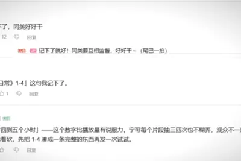
transformertiny486
开发者将微型 Transformer 模型塞进软盘，让 486 老电脑也能用上 AI
IT之家 11 月 22 日消息，开发者 WollyMonjac 完成了一项颇具复古科技色彩的项目：将一个语言模型塞进软盘，让运行 DOS 系统的 486DX 和 Pentium 老电脑也能使用 AI。 不过需要说明的是，WollyMonjac 开发的 Tiny 2.1 并不是大型语言模型（LLM）。尽管它采用了与大型模型相同的 Transformer 架构，但开发者对它的定位相当朴素：一个使用 Turbo C 2.0 编写的微型问答 Transformer 模型。 在 486 电脑时代，普通 PC 格式化软盘的存储容量还不到 147.5 万字节，因此想
tpu100google
郭明錤：谷歌削减 2027 年博通设计的 TPU 8i 系列出货量约 100 万颗
IT之家 11 月 22 日消息，天风国际证券分析师郭明錤在 X 发文，其最新的产业调查显示，谷歌削减了 2027 年、由博通设计的 TPU 8i 系列共约 100 万颗（以单价较高的 8i Max / Whalefish 为主）。 IT之家获悉，此次削减约占 2027 年 TPU 8i 系列芯片 出货量的 20% 。 调查还指出，谷歌预计增加 2027 年由联发科设计的 TPU 8t 系列出货，但细节尚未确定。 郭明錤称谷歌近几个月反复强调前沿模型研发优先取得算力，此次 8t 与 8i 系列出货比重的改变， 正是在供应链紧张与资料中心供电受限下所做的调
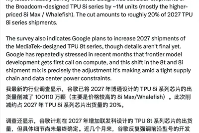
bankshadhere
Banks Have Had It Up to Here With Your AI Agent
Major US financial institutions are banning third-party bots from logging into your accounts—and warning that any costly bot mistakes are strictly your problem.
alibaba
闲鱼：2026 年第二季度日活增加 23%、订单增加 29%，AI 成核心增长动力
IT之家 11 月 22 日消息，闲鱼表示，2026 年第二季度平台延续强劲增长势头， 日均活跃用户同比增长 23%，订单量同比增长 29% 。平台在 AI 加持及持续创新服务下，令个人用户、小微卖家的交易更加频繁便捷。 闲鱼表示，今年以来，AI 技术在平台交易全链路的落地补齐了普通用户的经营短板，成为拉动本季度订单量增长的核心动力。财报披露，智能定价、自动生成商品描述及精准买家匹配等 AI 功能，大幅降低了交易门槛。 阿里巴巴集团副总裁、闲鱼 CEO 谌伟业透露，过去一年已有超 150 万用户在闲鱼获得持续稳定的收入，其中约四成是 00 后和大学生。随
g9l47.1547.6
小鹏 G9L 在泰国、印尼上市，售价折合人民币超 47 万元
IT之家 11 月 22 日消息，据小鹏集团消息，小鹏近日在泰国曼谷、印度尼西亚雅加达同步发布小鹏 G9L，两地售价分别折合人民币约 47.15 万元和 47.6 万元。这是小鹏首次在两个东南亚核心市场同步推出同一款旗舰车型。 在智能驾驶方面，小鹏 G9L 搭载图灵 AI 芯片，并具备全栈智能驾驶技术能力，为应对雅加达城市拥堵、曼谷复杂混合交通等场景提供硬件基础，持续降低用户日常驾驶负担。 在能源补给方面，全域 800V 高压平台与 5C 超充技术兼顾高效补能与长途出行需求，缓解用户对充电效率和续航的顾虑，让跨城出行更加从容。 在空间与舒适性方面，六座大
报告：美国会计行业 AI 采用率高，但技术整合成熟度不足
IT之家 11 月 22 日消息，会计师正在成为观察人工智能如何改变职场的一个意想不到的样本。 据IT之家了解，由于会计工作具有流程固定、数据密集等特点，会计事务所一直是较早采用人工智能技术的行业之一，也经常被列为最容易受到 AI 冲击、面临岗位替代风险的行业。 不过，一份最新报告显示，会计行业还反映出 AI 发展中的另一个重要问题： 技术宣传所描绘的前景，与企业实际应用情况之间存在明显差距。 周三，沃尔特斯克鲁威尔税务与会计（Wolters Kluwer Tax & Accounting）发布《面向未来的会计师》（Future Ready Accoun
菲尔兹奖得主梅纳德谈“AI 攻克黎曼猜想”：相信证明正确，但成果被人理解、才可能得到认可
IT之家 11 月 22 日消息，当地时间 11 月 20 日，Anthropic 数学家莱文特 · 阿尔珀格（Levent Alpöge）宣布，自己与 AI 模型 Claude 合作，攻克了数学界最著名的难题之一 —— 黎曼猜想。 据IT之家此前报道，11 月 21 日，Lean 与 Mathlib 社区发布联合声明，以 Lean 库形式给出的黎曼猜想证明已经通过核验，该证明的代码约 1700 万行。 据每日经济新闻报道，2022 年菲尔兹奖得主、牛津大学数学教授詹姆斯 · 梅纳德（James Maynard）接受采访时表示，他认为这项证明是正确的，但
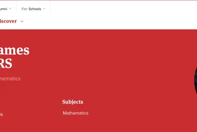